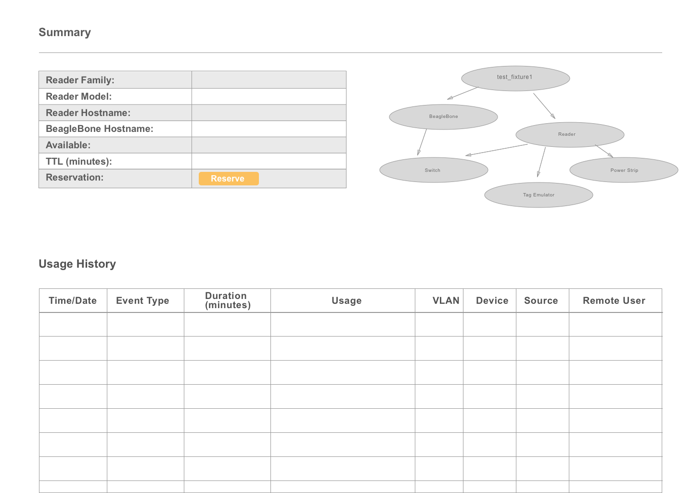
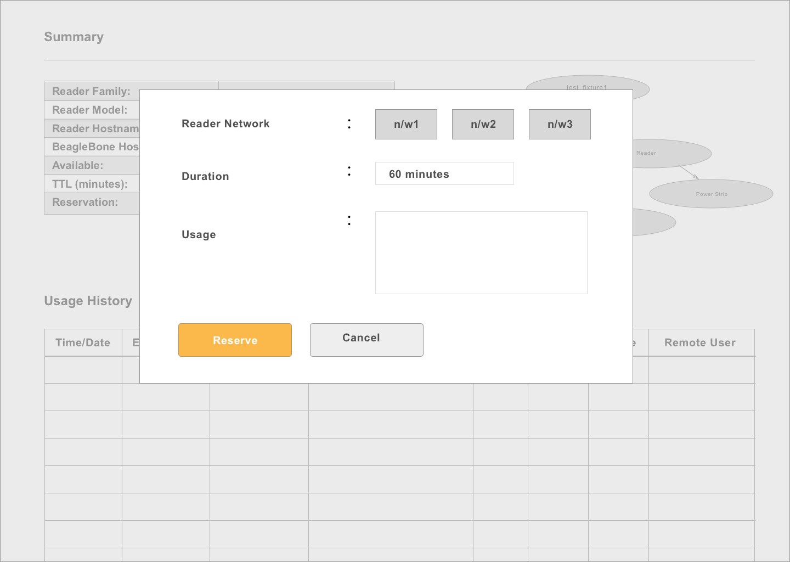
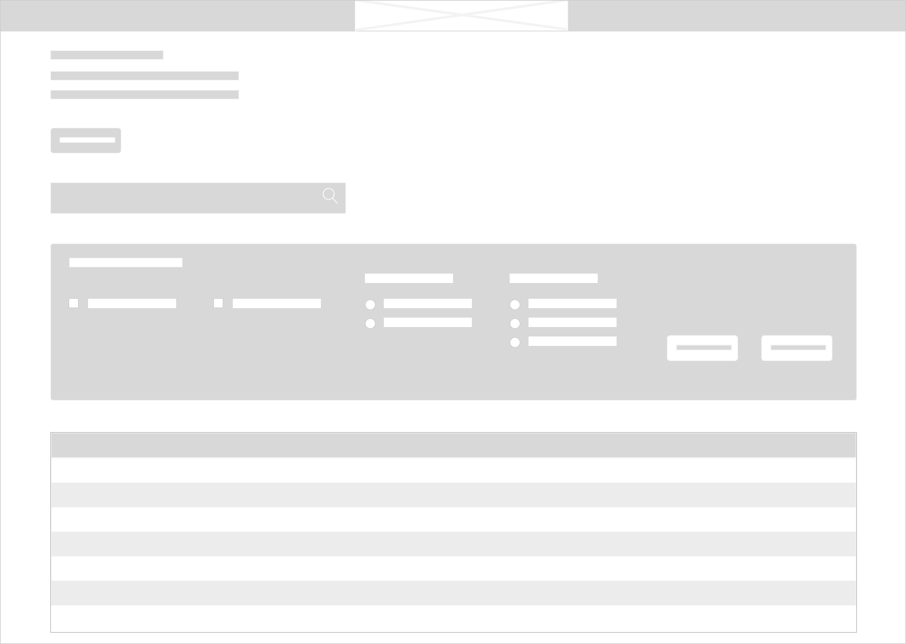
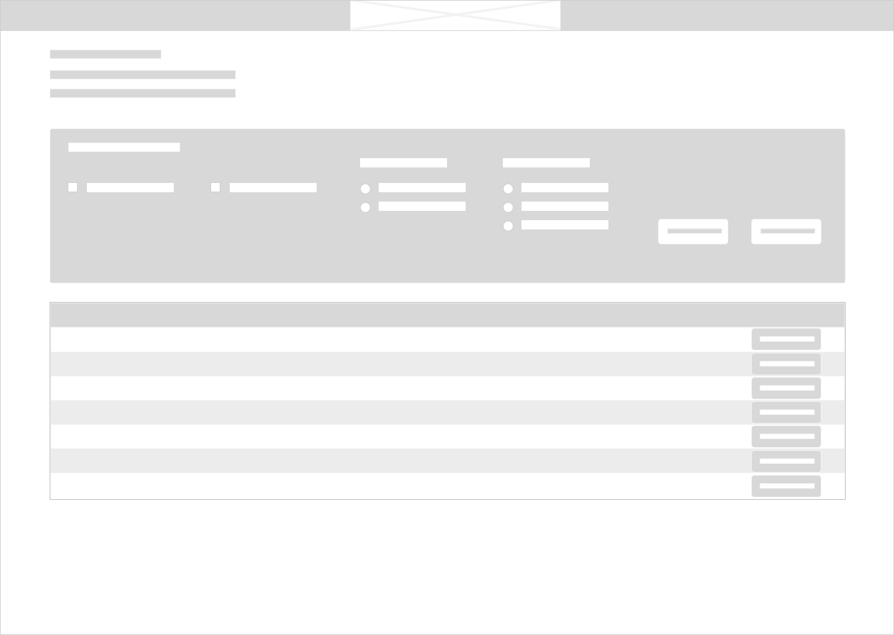
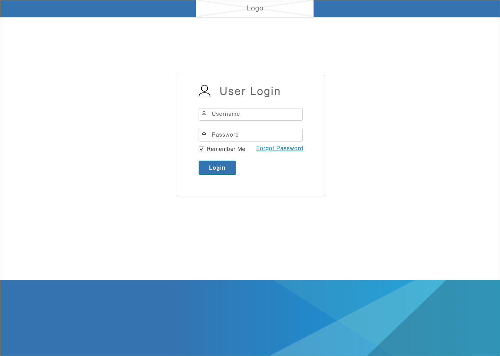

Client: Impinj
This was an independent project.
Duration : 4 weeks sprint
Process: Research, Re-design, Iterate, Hand-off and communication to delivery team.
My Role: I was solely responsible for the entire process mentioned above.
Tools : Photoshop, Sketch, InVision.
This is a lab equipment reservation system for engineers to schedule and run tests on shared test equipment. This system can be accessed via APIs or through a basic HTML page. The goal of this project is to build a powerful and better user interface for this system.
Some of the challenges in this project are:
During the research phase I explored the following:
Project Goals:
Current Home Page
Current Details Page
Current Details Modal
To find what’s working and not working, I interviewed 6 engineers.
I did Heuristic Evaluation for the current system. A few things to highlight:
The design process included the following steps:
In my initial design, I came up with couple of ways to make a reservation.
Lesson learnt: “Multiple ways to achieve the same task is not always useful to the users. It confuses than helping them.”
V1 : Quick Reservation
"Quick Reservation" button at the very top to help users reserve a test fixture quickly. Turned out to be confusing.
V2 : Filter Options
Filter options to find the right test fixture. Users found it very useful during usability testing.
Final
Final mockup of the home page.
I added a quick filter component to ease the process of finding the right reader. Such a filter can scale when many number of resources are added. I added notification for when the reservation ends. This will help the engineers not to hold a reader even after the reservation is done and also make it available for the next engineer waiting on them.
During the research phase, I was exposed to two themes. One being, the current UI is not helping the engineers to find a reader quickly and allows bad practices like keeping the reservation on a reader for infinite number of minutes. Second, improving additional functionalities similar to what the API provides. The following were identified to be included in the v2 of the project.
User Login
Home Page
Notification window expanded
Profile window expanded
Queuing on Test Fixture
Call to action change of state